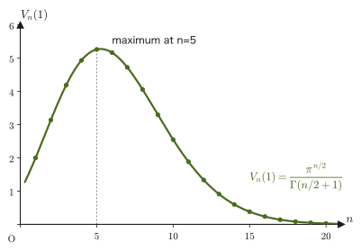
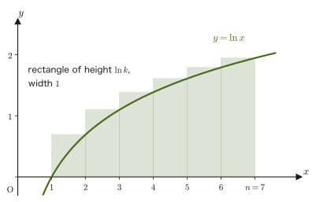
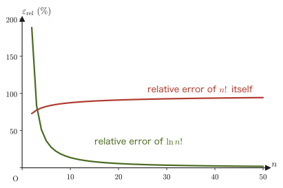
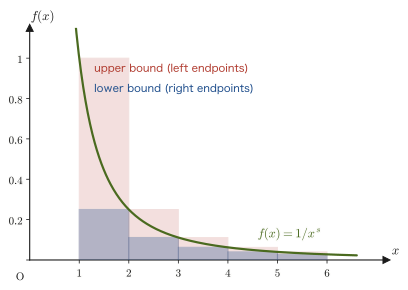
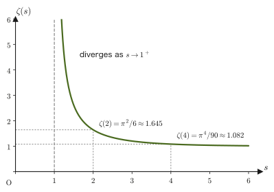
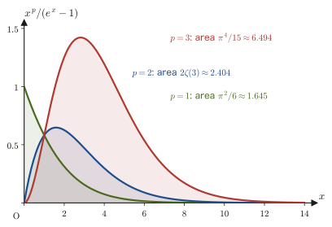

Chapter 47Mathematics for Statistical Mechanics — The n-Dimensional Ball, Stirling's Formula, and the Zeta Function
The objects that statistical mechanics deals with are collections of particles whose number is so large that intuition fails: $N_{\mathrm A}\approx6.02\times10^{23}$ per mole of gas. For example, if we list the positions and momenta of all $N$ particles, we obtain a set of $6N$ real numbers—that is, a single point in a $6N$-dimensional space. To count “how many states have an energy no greater than a given value” in such an extremely high-dimensional space, we need to generalize the formulas for the area of a circle and the volume of a ball to $n$ dimensions. We also need an approximation formula (Stirling's formula) for concretely evaluating the logarithms of numbers so large that neither a calculator nor pencil-and-paper calculation can handle them, such as $N!$ (with $N\sim10^{23}$).
Furthermore, when we add up the energy mode by mode (a “mode” is one particular way in which a wave can oscillate) for atomic vibrations, electromagnetic waves, and sound waves, infinite series of the form $\sum_k 1/k^s$—the zeta function—and integrals of the form $\displaystyle\int_0^\infty x^{s-1}/(e^x\mp1)\,\dd x$ arise naturally.
This chapter is meant to prepare this whole set of mathematical tools before they are used (it plays the same role as the first chapters of mechanics and of thermodynamics, which set up the vocabulary and notation before treating motion and heat; no physics appears yet). We treat the formula for the volume of an $n$-dimensional ball and its proof (a somewhat technical but beautiful set-up that uses the $n$-fold Gaussian integral), the generalization of the Gaussian integral, Stirling's formula, the definition of the zeta function and a proof of its range of convergence, and integral formulas involving the zeta function. We also prepare the essentials of the properties of the gamma function (a review of Chapter 32 of the companion volume “University Mathematics” (AD 02)), the concrete values of $\zeta(2),\zeta(4),\zeta(3/2),\zeta(3)$, the general formulas for Bose-type and Fermi-type integrals, and a “toolbox” of logarithmic differentiation and integration by parts. Which chapter uses each tool is summarized in Table 47.2 of Section 47.5.4.
Note that the base of the exponential function, Napier's number, is written $e$ (in forms such as $e^x$ and $e^{-\beta E}$) in the statistical mechanics chapters of this book as well. Writing the elementary charge as $e$ too would be confusing, so where the elementary charge appears (as in the battery example in Chapter 52), we write it as $q$ to distinguish the two. Only when an expression becomes long do we sometimes write the exponential as $\exp(\cdot)$.
- Chapter 47 (this chapter) Mathematics for statistical mechanics—the volume of an $n$-dimensional ball, Stirling's formula, and the zeta function. A preparatory chapter that does not yet enter into physics.
- Chapter 48 Microstates and the principle of equal a priori probability—phase space and quantization, the ergodic hypothesis, and the microcanonical distribution. This is the first occasion on which the number of states of an ideal gas is found using this chapter's volume of an $n$-dimensional ball.
- Chapter 49 Thermodynamic weight and Boltzmann's principle—$S=k_{\mathrm B}\ln W$. Using this chapter's volume of an $n$-dimensional ball and Stirling's formula, we derive the entropy of an ideal gas.
- Chapter 50 The canonical distribution and the partition function—statistical mechanics of a system whose temperature is kept constant. We use this chapter's Gaussian integrals and logarithmic differentiation.
- Chapter 51 Applications of the canonical distribution—ideal gases, the specific heat of solids, and paramagnets. We use this chapter's Gaussian integrals and Stirling's formula.
- Chapter 52 The grand canonical distribution and quantum statistics—the Fermi and Bose distributions. We use this chapter's Bose-type and Fermi-type integral formulas and $\zeta(3/2)$ (Bose–Einstein condensation).
- Chapter 53 Statistics of photons and phonons—black-body radiation (the Stefan–Boltzmann law) and the specific heat of the Debye model. We directly use this chapter's $\zeta(4)$, $\zeta(3)$, and Bose-type integral formula.
- Understand the formula $V_n(R)=\pi^{n/2}R^n/\Gamma(n/2+1)$ for the volume of an $n$-dimensional ball, and check the meaning of the formula in the concrete cases $n=1,2,3$ (line segment, disk, ball)
- Actually prove this formula using the $n$-fold Gaussian integral (checking the justification for every line of the manipulations). Also derive the general formula for the Gaussian integral $\int_0^\infty x^{2n}e^{-ax^2}\dd x$
- Derive Stirling's formula $n!\approx n^ne^{-n}$ ($n\gg1$) using Riemann sums, and understand the key point of how it is used in statistical mechanics: “it is a crude approximation to $n!$ itself, but an excellent approximation to $\ln n!$”
- Understand the definition of the zeta function $\zeta(s)=\sum_{k=1}^\infty1/k^s$ and the proof (an estimate by an integral) that its range of convergence is $s\gt1$, and derive the values $\zeta(2)=\pi^2/6$ and $\zeta(4)=\pi^4/90$
- Derive the general form of the Bose-type and Fermi-type integral formulas $\int_0^\infty x^{s-1}/(e^x\mp1)\,\dd x$, and, using the tools of logarithmic differentiation and integration by parts, extend it to $\int_0^\infty x^pe^x/(e^x\mp1)^2\dd x$ (note that the argument of the zeta function becomes $p$)
- Learn concrete numerical values such as $\zeta(3/2)\approx2.612$ and $\zeta(3)\approx1.202$, and understand, as a preview, that these will be used in later chapters as constants in black-body radiation, the Debye model, and Bose–Einstein condensation
Source notes: Yasuhide Mochizuki, Physics Notes: Statistical Mechanics, pp. 1–3.
47.1 Why Do We Need “n-Dimensional” Mathematics? — The Volume of an n-Dimensional Ball
Let us take another careful look at the familiar formulas from high school and university mathematics: “the area of a circle of radius $R$ is $\pi R^2$” and “the volume of a sphere of radius $R$ is $\frac43\pi R^3$.” A circle is a two-dimensional (planar) figure, and a sphere is a three-dimensional (spatial) figure. Now, in spaces of four, five, …, $n$ dimensions, if we consider “the set of points whose distance from the origin is at most $R$” (the $n$-dimensional ball), what expression would its “volume” (the $n$-dimensional volume) be?
This may sound like an absurd question, but in statistical mechanics it becomes a calculation that cannot be avoided. For example, if we line up the momenta of a gas of $N$ particles as the tuple $(p_{x1},p_{y1},p_{z1},p_{x2},\ldots,p_{zN})$ of $3N$ real numbers, the condition “the total energy is at most a fixed value $E$” describes exactly the interior of a ball in $3N$-dimensional space (the region of points whose distance from the origin is at most $\sqrt{2mE}$). Situations in which we must find the volume of such a region actually arise in Chapters 48 and 49. In this section, therefore, we first define the $n$-dimensional ball for general $n$ as follows.
Definition 47.1: $n$-dimensional ball
Let $q_1,q_2,\ldots,q_n$ be generalized coordinates (a set of several real numbers that specifies the state of a physical system, not necessarily positions; in the gas example above, we regard the momentum components $p_{x1},\ldots,p_{zN}$ as $q_1,\ldots,q_{3N}$). Consider the inequality
$$ q_1^2+q_2^2+\cdots+q_n^2\le R^2 $$The set of all points $(q_1,\ldots,q_n)$ satisfying it is called the $n$-dimensional ball of radius $R$. For $n=2$ it is nothing other than the interior of the circle familiar from high school mathematics, and for $n=3$ it is nothing other than the interior of a sphere.
We first check concretely what the volume $V_n(R)$ of this $n$-dimensional ball is for $n=1,2,3$, and then actually prove the general formula in the next section, Section 47.2.
Illustration 47.1: Concrete examples of the volume for $n=1,2,3$
Let us consider the general formula, which we will prove later in Section 47.2:
$$ V_n(R)=\frac{\pi^{n/2}}{\Gamma\!\left(\dfrac n2+1\right)}R^n $$Let us check what we obtain by substituting $n=1,2,3$ into it. Here $\Gamma$ is the gamma function (a function that extends the factorial to real numbers; we learned it in University Mathematics, Section 32.2, and we review the key points in the box below).
(i) When $n=1$. Using $\Gamma\!\left(\frac32\right)=\frac12\sqrt\pi$ (University Mathematics, Formulas 32.3 and 32.4), we have
$$ V_1(R)=\frac{\pi^{1/2}}{\Gamma\!\left(\frac32\right)}R=\frac{\sqrt\pi}{\frac12\sqrt\pi}R=2R $$This agrees with the “length” of a line segment of length $2R$.
(ii) When $n=2$. Since $\Gamma(2)=1!=1$ (Formula 32.5), we have
$$ V_2(R)=\frac{\pi^{1}}{\Gamma(2)}R^2=\frac{\pi}{1}R^2=\pi R^2 $$This is exactly the formula for the area of a circle that we learned in high school mathematics.
(iii) When $n=3$. Since $\Gamma\!\left(\frac52\right)=\frac34\sqrt\pi$ (University Mathematics, Example 32.3), we have
$$ V_3(R)=\frac{\pi^{3/2}}{\Gamma\!\left(\frac52\right)}R^3=\frac{\pi^{3/2}}{\frac34\sqrt\pi}R^3=\frac{\pi}{\frac34}R^3=\frac43\pi R^3 $$This also agrees with the formula for the volume of a sphere that you memorized in high school (in University Mathematics, Section 7.7, this $\frac43\pi R^3$ is derived by other methods using triple integrals, in three ways including spherical coordinates and integration over cross sections; it is good to confirm that the same answer can be reached by several routes).
Math Tool: Properties of the gamma function (review)
The gamma function is defined by $\Gamma(\alpha)=\displaystyle\int_0^\infty x^{\alpha-1}e^{-x}\,\dd x$ for $\alpha\gt0$ (University Mathematics, Section 32.2), and it has the following properties. We use them frequently in this chapter, so let us collect and check them here.
- $\Gamma(1)=1$, $\Gamma\!\left(\frac12\right)=\sqrt\pi$ (Formulas 32.2 and 32.3)
- The recurrence relation $\Gamma(\alpha+1)=\alpha\,\Gamma(\alpha)$ (Formula 32.4; it can be proved with one integration by parts)
- $\Gamma(n+1)=n!$ for a natural number $n$ (Formula 32.5; it is clear if we use the recurrence relation repeatedly)
From this recurrence relation we see that the form $\Gamma\!\left(\frac n2+1\right)$ used in this chapter is an ordinary factorial when $n$ is even, and a “factorial of a half-integer” when $n$ is odd. For example, as in $\Gamma\!\left(\frac32\right)=\frac12\Gamma\!\left(\frac12\right)=\frac12\sqrt\pi$ and $\Gamma\!\left(\frac52\right)=\frac32\Gamma\!\left(\frac32\right)=\frac34\sqrt\pi$, we can always compute it by lowering the argument with the recurrence relation until we reach $\Gamma(1/2)=\sqrt\pi$.
Example 47.1: Volume of the four-dimensional ball
Use the formula $V_n(R)=\pi^{n/2}R^n/\Gamma\!\left(\frac n2+1\right)$ to find the volume $V_4(R)$ of the four-dimensional ball.
Solution. Substituting $n=4$ gives $\Gamma\!\left(\frac42+1\right)=\Gamma(3)$. Since $\Gamma(3)=2!=2$ by Formula 32.5, we obtain
$$ V_4(R)=\frac{\pi^{4/2}}{\Gamma(3)}R^4=\frac{\pi^2}{2}R^4 $$Unlike the cases $n=1,2,3$, we cannot directly picture this as a “familiar figure,” but as a formula the value is found by exactly the same procedure—this is the convenience of abstract $n$-dimensional arguments. (In Example 47.2 of Section 47.2, we confirm this result from another angle as well.)
47.2 Proof of the Volume of an n-Dimensional Ball — The Route via the n-Fold Gaussian Integral
Let us now actually prove the formula that we confirmed in the previous section. For $n=1,2,3$ there are direct methods, such as integrating the cross-sectional area (as in University Mathematics, Chapter 7), but to prove the formula for general $n$ in one stroke, the clearest route is the clever approach that at first sight looks roundabout: “compute the $n$-fold Gaussian integral in two different ways and compare the two results.”
47.2.1 Confirming that the volume is proportional to $R^n$
Why can we write $V_n(R)=a_nR^n$ ($a_n$ is a constant determined by $n$ alone)?
Regard the $n$-dimensional ball of radius $R$ as the $n$-dimensional ball of radius $1$ stretched by a factor of $R$ in every coordinate direction. Under the coordinate change $q_i=Ru_i\ (i=1,\ldots,n)$, the infinitesimal volume element becomes $\dd q_1\cdots\dd q_n=R^n\,\dd u_1\cdots\dd u_n$ (each of the $n$ coordinates is stretched by a factor of $R$, so the volume is stretched by the product of $n$ factors of $R$. This is a familiar fact, corresponding to the area being multiplied by $R^2$ for $n=2$ and the volume being multiplied by $R^3$ for $n=3$). Therefore we obtain
$$ V_n(R)=\int_{q_1^2+\cdots+q_n^2\le R^2}\dd q_1\cdots\dd q_n=\int_{u_1^2+\cdots+u_n^2\le1}R^n\,\dd u_1\cdots\dd u_n=R^n\,V_n(1) $$In other words, the constant of proportionality $a_n=V_n(1)$ that appears when we write $V_n(R)=a_nR^n$ is itself the volume of the $n$-dimensional ball of radius $1$ (the unit ball), and it is determined by $n$ alone, independently of $R$. The problem is how to express this $a_n$ as a formula in $n$.
47.2.2 Computing the $n$-fold Gaussian integral in two ways
To find $a_n$, we consider the following integral, which at first sight seems unrelated. Let $q_1,\ldots,q_n$ be generalized coordinates, and define
\begin{equation} I_n=\int_{-\infty}^{\infty}\cdots\int_{-\infty}^{\infty}e^{-(q_1^2+q_2^2+\cdots+q_n^2)}\,\dd q_1\,\dd q_2\cdots\dd q_n \label{eq:47-In-def} \end{equation}an $n$-fold integral over all of space $\R^n$. The strategy of this proof is to compute this $I_n$ in two different ways and to determine $a_n$ by comparing the two resulting expressions.
Derivation: Volume formula for the n-dimensional ball (Part 1 — Computing $I_n$ by factoring it into a product)
Method A: Regard it as a product of $n$ independent one-variable integrals. If we use the property of the exponential function $e^{a+b}=e^ae^b$ in the reverse direction, the sum $q_1^2+\cdots+q_n^2$ in the exponent can be broken up into a product of separate factors:
$$ e^{-(q_1^2+q_2^2+\cdots+q_n^2)}=e^{-q_1^2}\cdot e^{-q_2^2}\cdots e^{-q_n^2} $$Since each of the integration variables $q_1,\ldots,q_n$ runs independently from $-\infty$ to $\infty$, this $n$-fold integral factors into a product of $n$ one-variable integrals of the same form:
$$ I_n=\left(\int_{-\infty}^{\infty}e^{-q_1^2}\dd q_1\right)\left(\int_{-\infty}^{\infty}e^{-q_2^2}\dd q_2\right)\cdots\left(\int_{-\infty}^{\infty}e^{-q_n^2}\dd q_n\right) $$Every factor is the Gaussian integral $\displaystyle\int_{-\infty}^\infty e^{-x^2}\dd x=\sqrt\pi$, which has the same value regardless of the name of the integration variable (this was proved in University Mathematics, Section 7.5 in two ways: by converting the double integral to polar coordinates and by using the squeeze theorem). Hence all $n$ factors equal $\sqrt\pi$, so that
\begin{equation} I_n=(\sqrt\pi)^n=\pi^{n/2}\qquad\text{……①} \label{eq:47-In-way-a} \end{equation}is obtained.
∎ (end of the derivation of ①)
Derivation: Volume formula for the n-dimensional ball (Part 2 — Computing $I_n$ by dividing space into “shells”)
Method B: Divide $n$-dimensional space into “thin shells” of constant distance $r$ from the origin, and integrate. The integrand $e^{-(q_1^2+\cdots+q_n^2)}$ is determined only by the distance $r=\sqrt{q_1^2+\cdots+q_n^2}$ from the origin and does not depend on direction (since $q_1^2+\cdots+q_n^2=r^2$, the integrand can be rewritten as $e^{-r^2}$). When we integrate such a function, “determined by the distance $r$ alone,” over all of space, the calculation is easier if we divide $n$-dimensional space into thin shells centered at the origin, running from radius $r$ to $r+\dd r$—thin rings in two dimensions, thin spherical shells in three dimensions—and integrate over them.
Let us consider the volume $\dd V_n(r)$ of the shell of radius $r$ (the region between $r$ and $r+\dd r$). This is nothing other than the volume of the $n$-dimensional ball of radius $r+\dd r$ minus the volume of the $n$-dimensional ball of radius $r$, so by the very definition of differentiation (the limit of a difference), we have
$$ \dd V_n(r)=V_n(r+\dd r)-V_n(r)=V_n'(r)\,\dd r $$Substituting the result of Section 47.2.1, $V_n(r)=a_nr^n$, and differentiating, we get
\begin{equation} \dd V_n(r)=na_nr^{n-1}\,\dd r \label{eq:47-shell} \end{equation}This is the generalization to $n$ dimensions of the relations “differentiating the area $\pi r^2$ of a circle of radius $r$ with respect to $r$ gives the circumference $2\pi r$ (because circumference × $\dd r$ is the area of a thin ring)” and “differentiating the volume $\frac43\pi r^3$ of a sphere of radius $r$ with respect to $r$ gives the surface area $4\pi r^2$ (because surface area × $\dd r$ is the volume of a thin spherical shell)” (it is worth checking that in these cases $na_nr^{n-1}=2\pi r$ for $n=2$ and $na_nr^{n-1}=4\pi r^2$ for $n=3$).
Using this “volume element of a shell,” the integral $I_n$ over all of space (Eq. \eqref{eq:47-In-def}) can be rewritten as a one-variable integral in which $r$ runs from $0$ to $\infty$:
$$ I_n=\int_0^\infty e^{-r^2}\,\dd V_n(r)=\int_0^\infty e^{-r^2}\cdot na_nr^{n-1}\,\dd r=na_n\int_0^\infty r^{n-1}e^{-r^2}\,\dd r $$To evaluate this last integral, we perform the substitution $t=r^2$. Differentiating $t=r^2$ with respect to $r$ gives $\dd t=2r\,\dd r$, that is, $\dd r=\dfrac{\dd t}{2r}=\dfrac{\dd t}{2\sqrt t}$ (we used $r=\sqrt t$). The limits of integration correspond directly, $r=0\to t=0$ and $r\to\infty\to t\to\infty$, and $r^{n-1}=(\sqrt t)^{n-1}=t^{(n-1)/2}$, so
$$ \int_0^\infty r^{n-1}e^{-r^2}\,\dd r=\int_0^\infty t^{\frac{n-1}2}e^{-t}\cdot\frac{\dd t}{2\sqrt t}=\frac12\int_0^\infty t^{\frac{n-1}2-\frac12}e^{-t}\,\dd t=\frac12\int_0^\infty t^{\frac n2-1}e^{-t}\,\dd t $$The last integral is exactly the definition of the gamma function, $\Gamma(\alpha)=\displaystyle\int_0^\infty x^{\alpha-1}e^{-x}\dd x$ (University Mathematics, Definition 32.3), with $\alpha=\dfrac n2$, so it equals $\Gamma\!\left(\dfrac n2\right)$. Therefore,
\begin{equation} I_n=na_n\cdot\frac12\Gamma\!\left(\frac n2\right)=\frac n2\,a_n\,\Gamma\!\left(\frac n2\right)\qquad\text{……②} \label{eq:47-In-way-b} \end{equation}∎ (end of the derivation of ②)
Q.E.D.: Comparing ① and ② to determine $a_n$
Since we have computed the same integral $I_n$ in two different ways, ① (Eq. \eqref{eq:47-In-way-a}) and ② (Eq. \eqref{eq:47-In-way-b}) are equal:
$$ \pi^{n/2}=\frac n2\,a_n\,\Gamma\!\left(\frac n2\right) $$Solving this for $a_n$ gives
$$ a_n=\frac{\pi^{n/2}}{\dfrac n2\,\Gamma\!\left(\dfrac n2\right)} $$Now, substituting $\alpha=\dfrac n2$ into the recurrence relation of the gamma function, $\Gamma(\alpha+1)=\alpha\,\Gamma(\alpha)$ (University Mathematics, Formula 32.4), gives $\Gamma\!\left(\dfrac n2+1\right)=\dfrac n2\,\Gamma\!\left(\dfrac n2\right)$, so rewriting the denominator, we obtain
$$ a_n=\frac{\pi^{n/2}}{\Gamma\!\left(\dfrac n2+1\right)} $$Since $V_n(R)=a_nR^n$, as we saw in Section 47.2.1, it follows that
$$ V_n(R)=\frac{\pi^{n/2}}{\Gamma\!\left(\dfrac n2+1\right)}R^n $$which is what was to be shown.
∎
Formula 47.1: Volume of the $n$-dimensional ball
For generalized coordinates $q_1,\ldots,q_n$, the volume of the $n$-dimensional ball of radius $R$ defined by $q_1^2+\cdots+q_n^2\le R^2$ (Definition 47.1) is
\begin{equation} V_n(R)=\frac{\pi^{n/2}}{\Gamma\!\left(\dfrac n2+1\right)}R^n\qquad(n=1,2,3,\ldots) \label{eq:47-vn-thm} \end{equation}The specific values for $n=1,2,3$ agree with $2R,\ \pi R^2,\ \frac43\pi R^3$, as confirmed in Illustration 47.1.
Caution: Where is the “trick” in this proof?
This proof does not compute the desired volume $V_n(R)$ directly. Instead, it takes an indirect strategy: first pin down only the form $V_n(R)=a_nR^n$, and then determine the proportionality constant $a_n$ alone by computing a completely different integral $I_n$ in two ways. This idea of “computing the same quantity in two different ways and comparing the results” is essentially the same as the idea used in University Mathematics, Chapter 7, when the Gaussian integral $\int e^{-x^2}\dd x=\sqrt\pi$ was proved (instead of computing the double integral in rectangular (Cartesian) coordinates as it stood, we converted it to polar coordinates). In mathematics and physics there are very many occasions on which we check that the same quantity can be reached by several different routes.
Preview: This formula for $V_n(R)$ is used as it stands, with $n=3N$, in Chapter 48, when we count “the number of microstates with energy not exceeding $E$” of an ideal gas consisting of $N$ particles, and it becomes the starting point in Chapter 49 for finding the entropy $S=k_{\mathrm B}\ln W$.
47.2.3 The general formula for the surface area, and applications
From the relation $\dd V_n(r)=na_nr^{n-1}\dd r$ obtained in the course of Eq. \eqref{eq:47-shell}, we see that the “surface area” of the $n$-dimensional ball (the size of its $(n-1)$-dimensional boundary), $S_n(r)=\dd V_n/\dd r$, can in general be found from the convenient relation
\begin{equation} S_n(R)=\frac{\dd V_n}{\dd R}=na_nR^{n-1}=\frac{n\,V_n(R)}{R} \label{eq:47-surface-general} \end{equation}(the last equality used $V_n(R)=a_nR^n$).
Example 47.2: Surface area of the four-dimensional ball, and a check for $n=2,3$
From $V_4(R)=\dfrac{\pi^2}2R^4$ found in Example 47.1, find the surface area $S_4(R)$ of the four-dimensional ball. Also confirm that Eq. \eqref{eq:47-surface-general} correctly reproduces the familiar formulas (the circumference of a circle and the surface area of a sphere) for $n=2,3$.
Solution. Computing $S_4(R)=\dd V_4/\dd R$ directly gives
$$ S_4(R)=\frac{\dd}{\dd R}\left(\frac{\pi^2}2R^4\right)=\frac{\pi^2}2\times4R^3=2\pi^2R^3 $$On the other hand, for $n=2$ we have $V_2(R)=\pi R^2$, so $S_2(R)=\dd V_2/\dd R=2\pi R$—in agreement with the familiar formula for the circumference. For $n=3$ we have $V_3(R)=\frac43\pi R^3$, so $S_3(R)=\dd V_3/\dd R=4\pi R^2$—in agreement with the familiar formula for the surface area of a sphere. In this way, Eq. \eqref{eq:47-surface-general} correctly reproduces the familiar results for $n=2,3$, and we have confirmed that for general $n$ as well, the surface area is found by the same procedure (just differentiate).

Intuition: Why does the volume of a high-dimensional ball “shrink away”?
Figure 47.2 plots the volume $V_n(1)$ of the unit ball ($R=1$) as a function of $n$. Let us compare it with the cube of side $2$ in which the unit ball just fits (volume $2^n$, which increases without bound with $n$). The ratio $V_n(1)/2^n$ decreases rapidly: $\pi/4\approx0.785$ for $n=2$, $\pi/6\approx0.524$ for $n=3$, and about $0.0025$ for $n=10$. As the dimension increases, the ball can occupy only “a very narrow region near the center of a cube with many corners”—this is one aspect of the phenomenon called the “curse of dimensionality,” which is often discussed in high-dimensional geometry. In Chapters 48 and 49, where this formula is used in statistical mechanics, we deal with the enormously large dimension $n=3N\sim10^{23}$, but the real protagonists there are the volume formula obtained in this section and Stirling's formula, which we learn in the next section.
47.2.4 Generalization of the Gaussian integral — $\displaystyle\int_0^\infty x^{2n}e^{-ax^2}\dd x$
In the course of the calculation in Section 47.2.2, the integral $\displaystyle\int_0^\infty r^{n-1}e^{-r^2}\dd r=\frac12\Gamma\!\left(\frac n2\right)$ appeared. This is a special case of a “Gaussian integral” in which the coefficient in the exponent is changed from $1$ to a general $a\gt0$ and the power of $x$ multiplying the integrand is changed to a general even power $x^{2n}$. In Chapters 50 and 51, situations in which we multiply the Boltzmann factor $e^{-\beta p^2/2m}$ of the momentum $p$ by $p^2$ or $p^4$ and integrate (the mean kinetic energy, the Maxwell distribution, the partition function of the ideal gas) appear again and again, so we derive the general form here once and for all.
Formula 47.2: Gaussian integrals
Let $a\gt0$.
\begin{align} \int_{-\infty}^{\infty}e^{-ax^2}\dd x&=\sqrt{\frac\pi a} \label{eq:47-gauss-a}\\ \int_0^\infty x^{2n}e^{-ax^2}\dd x&=\frac{\Gamma\!\left(n+\frac12\right)}{2\,a^{\,n+\frac12}}=\frac{(2n-1)!!}{2^{n+1}}\sqrt{\frac{\pi}{a^{2n+1}}}\qquad(n=0,1,2,\ldots) \label{eq:47-gauss-b} \end{align}Here $(2n-1)!!=1\cdot3\cdot5\cdots(2n-1)$ (the double factorial, with $(-1)!!=1$).
Derivation: Formula 47.2
Eq. \eqref{eq:47-gauss-a}. Make the substitution $u=\sqrt a\,x$. Since $\dd u=\sqrt a\,\dd x$ and the interval of integration remains $-\infty\to\infty$, we get $\displaystyle\int_{-\infty}^\infty e^{-ax^2}\dd x=\frac1{\sqrt a}\int_{-\infty}^\infty e^{-u^2}\dd u=\frac{\sqrt\pi}{\sqrt a}=\sqrt{\pi/a}$ ($\int e^{-u^2}\dd u=\sqrt\pi$ is the Gaussian integral used in Section 47.2.2).
Eq. \eqref{eq:47-gauss-b}. Make the substitution $t=ax^2$. From $x=\sqrt{t/a}$ we get $\dd x=\dfrac{\dd t}{2\sqrt{a\,t}}$, and $x^{2n}=(t/a)^n$; since the interval of integration remains $0\to\infty$,
$$ \int_0^\infty x^{2n}e^{-ax^2}\dd x=\int_0^\infty\left(\frac ta\right)^ne^{-t}\frac{\dd t}{2\sqrt a\,\sqrt t}=\frac1{2a^{\,n+\frac12}}\int_0^\infty t^{\,n-\frac12}e^{-t}\dd t=\frac{\Gamma\!\left(n+\frac12\right)}{2a^{\,n+\frac12}} $$(the last integral is the definition of the gamma function with $\alpha=n+\frac12$). Further, applying the recurrence relation $\Gamma(\alpha+1)=\alpha\Gamma(\alpha)$ $n$ times until we reach $\Gamma(\frac12)=\sqrt\pi$, we get
$$ \Gamma\!\left(n+\tfrac12\right)=\left(n-\tfrac12\right)\left(n-\tfrac32\right)\cdots\tfrac12\,\Gamma\!\left(\tfrac12\right)=\frac{(2n-1)(2n-3)\cdots1}{2^n}\sqrt\pi=\frac{(2n-1)!!}{2^n}\sqrt\pi $$Therefore, $\dfrac{\Gamma(n+\frac12)}{2a^{n+\frac12}}=\dfrac{(2n-1)!!}{2^{n+1}}\dfrac{\sqrt\pi}{a^{\,n+\frac12}}=\dfrac{(2n-1)!!}{2^{n+1}}\sqrt{\dfrac\pi{a^{2n+1}}}$ is obtained.
∎
We summarize the specific values for $n=0,1,2$ in a table (in the form that leaves $a$ as it is; the value for $n=0$ is half of Eq. \eqref{eq:47-gauss-a}).
| $n$ | Integrand | Value |
|---|---|---|
| $0$ | $e^{-ax^2}$ | $\dfrac12\sqrt{\dfrac\pi a}$ |
| $1$ | $x^2e^{-ax^2}$ | $\dfrac14\sqrt{\dfrac\pi{a^3}}$ |
| $2$ | $x^4e^{-ax^2}$ | $\dfrac38\sqrt{\dfrac\pi{a^5}}$ |
When the power is odd, the calculation is even simpler, because after the substitution $t=ax^2$ the argument of $\Gamma$ becomes an integer. In general, $\displaystyle\int_0^\infty x^me^{-ax^2}\dd x=\dfrac{\Gamma\!\left(\frac{m+1}2\right)}{2a^{(m+1)/2}}$ ($m\gt-1$), and for example it equals $\dfrac1{2a}$ for $m=1$ and $\dfrac1{2a^2}$ for $m=3$.
Discussion: $\Gamma(1/2)=\sqrt\pi$ follows from the Gaussian integral; an alternative proof of the area of a circle
Setting $n=0$ and $a=1$ in Eq. \eqref{eq:47-gauss-b} gives $\displaystyle\int_0^\infty e^{-x^2}\dd x=\frac{\Gamma(\frac12)}2$. On the other hand, the left-hand side of Eq. \eqref{eq:47-gauss-a} (with $a=1$) is the integral of an even function, so $2\displaystyle\int_0^\infty e^{-x^2}\dd x=\sqrt\pi$. Combining the two gives $\Gamma\!\left(\frac12\right)=\sqrt\pi$. The relation $\Gamma(\frac12)=\sqrt\pi$, which we have been using so far without comment, turns out to say exactly the same thing as the value of the Gaussian integral.
Also, if we set $n=2$ in the proof of Section 47.2.2, equating $I_2=\pi$ (①) and $I_2=\frac22a_2\Gamma(1)=a_2$ (②) gives $a_2=\pi$; that is, the area of a circle, $V_2(R)=\pi R^2$, comes out of the double Gaussian integral. In effect, “the formula for the area of a circle has been proved by way of the Gaussian integral.”
Example 47.3: $\displaystyle\int_0^\infty x^2e^{-x^2/2}\dd x$
Use Formula 47.2 to find $\displaystyle\int_0^\infty x^2e^{-x^2/2}\dd x$. Also, use this result to verify that $\displaystyle\int_{-\infty}^{\infty}x^2\frac{e^{-x^2/2}}{\sqrt{2\pi}}\dd x=1$.
Solution. Viewing the exponent as $-\dfrac{x^2}2=-ax^2$, we have $a=\dfrac12$, and from $x^2=x^{2n}$ we have $n=1$. Substituting $a=\frac12$ into the value for $n=1$ in Table 47.1, $\dfrac14\sqrt{\dfrac\pi{a^3}}$, and using $a^3=\frac18$, we get
$$ \int_0^\infty x^2e^{-x^2/2}\dd x=\frac14\sqrt{\frac{\pi}{1/8}}=\frac14\sqrt{8\pi}=\frac14\cdot2\sqrt{2\pi}=\frac{\sqrt{2\pi}}2=\sqrt{\frac\pi2}\approx1.2533 $$(we used $\sqrt{8\pi}=\sqrt{4\cdot2\pi}=2\sqrt{2\pi}$). Since the integrand is an even function, the integral from $-\infty$ to $\infty$ is twice this, namely $\sqrt{2\pi}$. Dividing this by $\sqrt{2\pi}$, we obtain
$$ \int_{-\infty}^{\infty}x^2\frac{e^{-x^2/2}}{\sqrt{2\pi}}\dd x=\frac{\sqrt{2\pi}}{\sqrt{2\pi}}=1 $$This confirms the basic fact that the variance of the standard normal distribution (the Gaussian distribution with mean $0$ and variance $1$; for the calculation of expectation values, see University Mathematics, Section 14.4) is $1$.
Preview of how this is used. If we use the same calculation with $a=\beta/2m$, the average weighted by the Boltzmann factor $e^{-\beta p^2/2m}$ of the momentum $p$ is $\langle p^2\rangle=\dfrac{\int p^2e^{-ap^2}\dd p}{\int e^{-ap^2}\dd p}=\dfrac{\frac12\sqrt{\pi}\,a^{-3/2}}{\sqrt\pi\,a^{-1/2}}=\dfrac1{2a}=\dfrac m\beta=mk_{\mathrm B}T$, and this gives the mean kinetic energy $\langle p^2/2m\rangle=\frac12k_{\mathrm B}T$ (per momentum component). This is the equipartition theorem of Chapter 50.
47.3 Stirling's Formula
In statistical mechanics, in connection with quantities such as the number of ways of rearranging $N\sim10^{23}$ particles, the logarithm of the enormous number $N!$ often appears. Computing $N!$ directly on a calculator is impossible (because $N$ is far too large), but fortunately, when $n$ is large there is a known formula that approximates $n!$ with good accuracy. This is called Stirling's formula.
Formula 47.3: Stirling's formula (simplified version)
\begin{equation} n!\approx n^ne^{-n}\qquad(n\gg1) \label{eq:47-stirling} \end{equation}(This is an approximation in the sense of the logarithmic form $\ln n!\approx n\ln n-n$. That it is crude as an approximation to $n!$ itself will be confirmed in Example 47.4 below and in the “Why” box.)
Derivation: Deriving Formula 47.3 by the method of Riemann sums
Taking the natural logarithm of both sides of $n!=1\cdot2\cdot3\cdots n$, the product becomes a sum by the property of logarithms $\ln(ab)=\ln a+\ln b$:
$$ \ln n!=\ln(1\cdot2\cdot3\cdots n)=\ln1+\ln2+\cdots+\ln n=\sum_{k=1}^n\ln k $$As an approximation valid when $n$ is large, we replace this sum $\displaystyle\sum_{k=1}^n\ln k$ by the integral $\displaystyle\int_1^n\ln x\,\dd x$. The reason is as follows. On the graph of the function $y=\ln x$, tile each interval $[k-1,k]$ with a rectangle of height $\ln k$ (the value of the function at the right endpoint) and width $1$; the total area of these rectangles is nothing other than $\displaystyle\sum_{k=1}^n\ln k$. Since $\ln x$ is monotonically increasing, this total area approximates the area under the curve, $\displaystyle\int_1^n\ln x\,\dd x$, from above, and the difference can be regarded as small compared with the integral itself (Figure 47.3. This is an application of the method of Riemann sums that you learned in high school mathematics—the relation between $\Sigma$ and $\displaystyle\int$. We will examine what the difference actually is later).

To evaluate the integral $\displaystyle\int_1^n\ln x\,\dd x$, we use the indefinite integral formula $\displaystyle\int\ln x\,\dd x=x\ln x-x+C$ (obtained by integration by parts with $u=\ln x,\ \dd v=\dd x$; since $\dd u=\dd x/x,\ v=x$, we have $\int\ln x\,\dd x=x\ln x-\int x\cdot\frac1x\,\dd x=x\ln x-\int\dd x=x\ln x-x+C$). Then
$$ \int_1^n\ln x\,\dd x=\Big[x\ln x-x\Big]_1^n=(n\ln n-n)-(1\cdot\ln1-1) $$Since $\ln1=0$, the expression in the second pair of parentheses on the right-hand side is $0-1=-1$. Therefore,
$$ \int_1^n\ln x\,\dd x=(n\ln n-n)-(-1)=n\ln n-n+1 $$Approximating the sum by the value of this integral, we obtain
$$ \sum_{k=1}^n\ln k\approx n\ln n-n+1 $$When $n\gg1$ ($n$ is sufficiently large), the constant $+1$ at the end is negligibly small compared with $n\ln n$ and $n$, so we may drop it:
$$ \sum_{k=1}^n\ln k\approx n\ln n-n $$We combine the right-hand side into a single logarithm so that it will later be easy to bring down from the exponent of the exponential function. Using $n=n\ln e$ (because $\ln e=1$) and the properties of logarithms (the constant-multiple formula $k\ln a=\ln a^k$ and the subtraction formula $\ln a-\ln b=\ln\frac ab$), we have
$$ n\ln n-n=n\ln n-n\ln e=\ln n^n-\ln e^n=\ln\frac{n^n}{e^n}=\ln(n^ne^{-n}) $$Thus we have obtained $\ln n!\approx n\ln n-n=\ln(n^ne^{-n})$. Rewriting this in the form $n!\approx n^ne^{-n}$ gives Formula 47.3. However, the meaning of “$\approx$” requires care: what we have shown here is an approximation after taking logarithms (even if $\ln A\approx\ln B$, the ratio $A/B$ is not necessarily close to $1$). In fact, the ratio of $n!$ to $n^ne^{-n}$ does not approach $1$; as we will see later, the former is about $\sqrt{2\pi n}$ times as large as the latter. From now on, writing $n!\approx n^ne^{-n}$ is shorthand that presupposes “taking the logarithm before using it.”
Supplement: The actual difference is $\ln n!-(n\ln n-n)\approx\dfrac12\ln(2\pi n)$ (obtained from the refined version in University Mathematics, Section 32.3). It is about $2.07$ for $n=10$ and about $3.22$ for $n=100$; even as $n$ increases, it grows only slowly, like a logarithm, and remains small compared with the leading term $n\ln n$. (The difference from “$n\ln n-n+1$,” which includes the constant $1$ dropped in the integral approximation, is $\frac12\ln(2\pi n)-1$.)
∎
Example 47.4: Checking the accuracy of the simplified Stirling's formula for $n=10$
For $n=10$, compare the approximate value given by Formula 47.3 with the true value $10!=3\,628\,800$, and find the relative error.
Solution. Substituting $n=10$ into Formula 47.3, we obtain
$$ n^ne^{-n}=10^{10}\times e^{-10}\approx10^{10}\times4.53999\times10^{-5}=453\,999.3 $$The relative error with respect to the true value $3\,628\,800$ is
$$ \frac{|3\,628\,800-453\,999.3|}{3\,628\,800}\approx87.5\% $$which is quite large. The simplified Stirling's formula cannot be called highly accurate as an approximation to $n!$ itself. The ratio of the true value to the approximate value is $3\,628\,800/453\,999.3\approx7.99$, which is nearly equal to the coefficient $\sqrt{2\pi n}=\sqrt{20\pi}\approx7.93$ of the refined version. (If we use the “refined version” $n!\approx\sqrt{2\pi n}\,n^ne^{-n}$, which adds the coefficient $\sqrt{2\pi n}$ and which you learned in University Mathematics, Section 32.3, the relative error for $n=10$ improves greatly, to about $0.83\%$.) Is this inaccurate simplified version, then, of no use at all? We will check this in the next “Why” box and in Example 47.5.
Why is the inaccurate simplified version used in statistical mechanics?
In the situations where Stirling's formula is actually used in statistical mechanics, what appears is almost always not $n!$ itself but the logarithmic form $\ln n!$, as in the entropy $S=k_{\mathrm B}\ln W$ (Chapter 49). So let us focus on the relative error of $\ln n!$ rather than that of $n!$ itself. Figure 47.4 plots both relative errors against $n$.
For $n!$ itself, the ratio $n!/(n^ne^{-n})\approx\sqrt{2\pi n}$ (about $8$ for $n=10$, about $25$ for $n=100$) moves away from $1$, and the approximate value is only $1/\sqrt{2\pi n}$ times the true value, so the relative error $1-1/\sqrt{2\pi n}$ approaches $100\%$. However, the ratio grows only slowly, roughly like $\sqrt n$, and when we take logarithms the difference is merely $\ln n!-(n\ln n-n)\approx\frac12\ln(2\pi n)$. The ratio of this difference to the leading term $n\ln n$ tends to $0$ as $n\to\infty$, and the relative error of $\ln n!$ steadily approaches $0$ as $n$ increases. For example, for $n=6\times10^{23}$, the correction of about $28$ is small compared with $n\ln n\approx3.3\times10^{25}$, so the relative error is only about $10^{-24}$. What determines the entropy $S=k_{\mathrm B}\ln W$ is the leading part of $\ln W$ (the part proportional to the number of particles $N$), and a correction of order $\ln N$ cannot be detected in experiments; so at the scale $n\sim N_{\mathrm A}\approx6\times10^{23}$ treated in statistical mechanics, the simplified version gives sufficient accuracy.

Example 47.5: Estimating $\ln(100!)$ and the number of digits
Use Formula 47.3 to estimate $\ln(100!)$, and estimate how many digits $100!$ has.
Solution. Substituting $n=100$ into the logarithmic form $\ln n!\approx n\ln n-n$ of Formula 47.3, we obtain
$$ \ln(100!)\approx100\ln100-100=100\times4.6052-100\approx460.52-100=360.52 $$(The true value is $\ln(100!)\approx363.74$, so the relative error is about $0.9\%$—far better than the relative error of $87.5\%$ for $n!$ itself in Example 47.4.) Converting to the common logarithm (the logarithm to base 10), $\log_{10}(100!)=\ln(100!)/\ln10\approx360.52/2.3026\approx156.6$, so the number of digits of $100!$ is the integer part of this value plus $1$, that is, it is estimated to be about $157$ digits (the true number of digits is $158$, so the estimate is nearly correct. The discrepancy arises from neglecting the correction term $\frac12\ln(2\pi n)$ contained in the refined version). The fact that the approximate size of $100!$ (in reality an integer with $158$ digits), which is far beyond hand calculation, can be estimated with this little computation is the practical value of Stirling's formula.
Application: Stirling's formula and entropy
In Chapter 49, $N!$ and $n_i!$ (the factorials of the numbers of particles occupying each energy level) appear in the thermodynamic weight (the number of microstates) $W$ of an ideal gas, and in computing $S=k_{\mathrm B}\ln W$ we approximate $\ln N!\approx N\ln N-N$ using Stirling's formula of this section (the simplified version suffices). This replaces expressions containing awkward factorials by smooth expressions consisting only of polynomials and logarithms, which are easy to differentiate and integrate. The same idea is used in computing the entropy of the arrangements of dopant atoms in semiconductors and of the atomic arrangements in alloys (the configurational entropy, which often appears in materials science as well).
47.4 Definition and Convergence of the Zeta Function
In statistical mechanics, we often have to add up infinitely many terms over the energy levels of particles or vibrational modes (the black-body radiation and the Debye model in Chapter 53 are typical examples). Let us consider the following infinite series, which arises naturally in such situations.
Definition 47.2: Zeta function
\begin{equation} \zeta(s)=\sum_{k=1}^\infty\frac1{k^s}=\frac1{1^s}+\frac1{2^s}+\frac1{3^s}+\cdots \label{eq:47-zeta-def} \end{equation}The function of $s$ defined by this equation is called the Riemann zeta function. Its range of convergence is $s\gt1$ (proved below).
This infinite series does not always make sense (that is, converge to a finite value). For example, for $s=1$, the harmonic series $\zeta(1)=1+\frac12+\frac13+\cdots$ is known to eventually exceed any value, however large (that is, it diverges; we verify this directly in Exercise 47.4). So for which $s$ does $\zeta(s)$ converge? Let us prove it.
Derivation: Proof that the range of convergence of the zeta function is $s\gt1$
Let $f(x)=1/x^s$ ($s\gt0$). Then $f(x)$ is monotonically decreasing for $x\gt0$ (the denominator $x^s$ grows with $x$, so $f(x)$ shrinks). A monotonically decreasing function takes its maximum value at the left endpoint $x=k$ and its minimum value at the right endpoint $x=k+1$ of the interval $[k,k+1]$, so
$$ f(k+1)\le f(x)\le f(k)\qquad(k\le x\le k+1) $$holds. Integrating this inequality over the interval $[k,k+1]$ (of width $1$; an inequality keeps its direction when integrated), we obtain
$$ f(k+1)\le\int_k^{k+1}f(x)\,\dd x\le f(k) $$(Figure 47.5. The equality sign on the left holds only when $f$ is a constant function, so, since $f$ is strictly monotonically decreasing here, the inequalities are in fact strict.)

We add this inequality up for $k=1,2,\ldots,n-1$. Adding up the left-hand sides gives $\displaystyle\sum_{k=1}^{n-1}f(k+1)=\sum_{j=2}^n f(j)=\sum_{k=2}^n\frac1{k^s}$; adding up the middle terms gives $\displaystyle\sum_{k=1}^{n-1}\int_k^{k+1}f(x)\,\dd x=\int_1^n f(x)\,\dd x$ (we have merely joined the intervals of integration); and adding up the right-hand sides gives $\displaystyle\sum_{k=1}^{n-1}f(k)=\sum_{k=1}^{n-1}\frac1{k^s}$. Hence
\begin{equation} \sum_{k=2}^n\frac1{k^s}\lt\int_1^n f(x)\,\dd x\lt\sum_{k=1}^{n-1}\frac1{k^s} \label{eq:47-zeta-bounds1} \end{equation}holds. Adding $f(1)=1$ to both sides of the left inequality gives $\displaystyle\sum_{k=1}^n\frac1{k^s}\lt\int_1^nf(x)\,\dd x+1$, and adding $f(n)=1/n^s$ to both sides of the right inequality gives $\displaystyle\int_1^nf(x)\,\dd x+\frac1{n^s}\lt\sum_{k=1}^n\frac1{k^s}$ (note that, by choosing what to add to which side, both can be brought to the form $\displaystyle\sum_{k=1}^n\frac1{k^s}$). Combining these, we obtain
\begin{equation} \int_1^nf(x)\,\dd x+\frac1{n^s}\lt\sum_{k=1}^n\frac1{k^s}\lt\int_1^nf(x)\,\dd x+1 \label{eq:47-zeta-bounds2} \end{equation}Next, we actually compute this integral. For $s\ne1$, by the integration formula for power functions,
$$ \int_1^nf(x)\,\dd x=\int_1^nx^{-s}\,\dd x=\left[\frac{x^{1-s}}{1-s}\right]_1^n=\frac{n^{1-s}-1}{1-s}=\frac1{s-1}\left(1-\frac1{n^{s-1}}\right) $$(The last equality merely tidies up the sign by multiplying the numerator and denominator by $-1$. We also used $n^{1-s}=1/n^{s-1}$.) Substituting this into Eq. \eqref{eq:47-zeta-bounds2}, we obtain
\begin{equation} \frac1{s-1}\left(1-\frac1{n^{s-1}}\right)+\frac1{n^s}\lt\sum_{k=1}^n\frac1{k^s}\lt\frac1{s-1}\left(1-\frac1{n^{s-1}}\right)+1 \label{eq:47-zeta-bounds3} \end{equation}What remains is to use this inequality to examine what happens to the partial sum $\displaystyle\sum_{k=1}^n1/k^s$ as $n\to\infty$, for each range of $s$.
[Convergence] The case $s\gt1$. In the right-hand inequality of Eq. \eqref{eq:47-zeta-bounds3}, if $s\gt1$ then $1/n^{s-1}\gt0$, so, regardless of $n$,
$$ \sum_{k=1}^n\frac1{k^s}\lt\frac1{s-1}\left(1-\frac1{n^{s-1}}\right)+1\lt\frac1{s-1}+1 $$holds, and the partial sums have an upper bound $\dfrac1{s-1}+1$ (a fixed wall independent of $n$). On the other hand, each term $1/k^s$ is positive, so the partial sum increases monotonically each time we increase $n$. If an ever-increasing sequence has a wall that it never exceeds, the sequence has no choice but to approach some value (a sequence that grew without limit would eventually exceed any wall). This is the basic theorem, treated rigorously in university analysis, that “a monotonically increasing sequence that is bounded above converges”; in this book we stay with this intuitive explanation. Hence, for $s\gt1$, $\zeta(s)$ converges.
[Divergence] The case $s\le1$. We use the bound from below (the left-hand inequality of Eq. \eqref{eq:47-zeta-bounds2}) $\displaystyle\sum_{k=1}^n\frac1{k^s}\gt\int_1^nx^{-s}\dd x$.
- The case $0\lt s\lt1$: $\displaystyle\int_1^nx^{-s}\dd x=\frac{n^{1-s}-1}{1-s}$, and since $1-s\gt0$, we have $n^{1-s}\to\infty$. Hence the partial sums diverge to $\infty$.
- The case $s=1$: since $\displaystyle\int_1^n\frac{\dd x}x=\ln n\to\infty$, the partial sums (the harmonic series) diverge.
- The case $s\le0$: since $1/k^s=k^{-s}\ge1$, the partial sum, being a sum of $n$ terms, is at least $n$, and diverges.
Therefore, $\zeta(s)$ converges only when $s\gt1$.
(Supplement) Listing the conditions under which $1/n^{s-1}$ and $1/n^s$, which appear in Eq. \eqref{eq:47-zeta-bounds3}, approach $0$ as $n\to\infty$, we have $s\ne1$ (the integration formula can be used), $s\gt0$ ($1/n^s\to0$), and $s\gt1$ ($1/n^{s-1}\to0$); the range satisfying all three simultaneously is $s\gt1$. This agrees with the conclusion of the case analysis above, and confirms that the condition $s\gt1$ emerges in the same way from both the “wall for convergence” and the “behavior of each term in the bounding expressions.”
∎
Theorem 47.1: Range of convergence of the zeta function
The series $\displaystyle\zeta(s)=\sum_{k=1}^\infty\frac1{k^s}$ converges (to a finite value) when $s\gt1$, and diverges when $s\le1$.

Example 47.6: Estimating $\zeta(3/2)$ and $\zeta(3)$ with partial sums and tail estimates
Verify the values $\zeta(3/2)\approx2.612$ and $\zeta(3)\approx1.202$, which will be used later, using the partial sums of Definition 47.2 and an integral estimate of the “remaining part” (the tail).
Solution. First, we write out the first few terms. For $s=3/2$, $\dfrac1{k^{3/2}}=1,\ 0.35355,\ 0.19245,\ 0.125,\ 0.08944,\ldots$ ($k=1,\ldots,5$), and for $s=3$, $\dfrac1{k^3}=1,\ 0.125,\ 0.03704,\ 0.015625,\ 0.008,\ldots$. For $s=3/2$ the sum of the first five terms is $1.7604$, which is still far from the true value. Since the terms decrease slowly, we need some device for estimating the remainder left over when we cut the sum off partway.
So $\zeta(s)$ is the partial sum $S_n=\displaystyle\sum_{k=1}^n1/k^s$ up to $n$ terms plus the remaining part (the tail) $\displaystyle\sum_{k=n+1}^\infty1/k^s$. As in the derivation in Section 47.4, since $f(x)=1/x^s$ is monotonically decreasing, $\displaystyle\int_{n+1}^\infty f\,\dd x\lt\sum_{k=n+1}^\infty\frac1{k^s}\lt\int_n^\infty f\,\dd x$ holds (a comparison of the areas of rectangles with the area under the curve, as in Figure 47.5). Carrying out the integration, for $s\gt1$ we have $\displaystyle\int_n^\infty x^{-s}\dd x=\frac{n^{1-s}}{s-1}$, so
$$ S_n+\frac{(n+1)^{1-s}}{s-1}\lt\zeta(s)\lt S_n+\frac{n^{1-s}}{s-1} $$holds. We use $n=1000$ for $s=3/2$ and $n=100$ for $s=3$ (adding numerically gives $S_{1000}=2.549146$ ($s=3/2$) and $S_{100}=1.202007$ ($s=3$)).
- $s=3/2$, $n=1000$: $\dfrac{n^{1-s}}{s-1}=\dfrac{1000^{-1/2}}{1/2}=\dfrac2{\sqrt{1000}}=0.063246$, and $\dfrac{2}{\sqrt{1001}}=0.063214$. Hence $2.549146+0.063214\lt\zeta(3/2)\lt2.549146+0.063246$, that is, $2.61236\lt\zeta(3/2)\lt2.61239$.
- $s=3$, $n=100$: $\dfrac{n^{1-s}}{s-1}=\dfrac{100^{-2}}2=0.000050$, and $\dfrac{101^{-2}}2=0.000049$. Hence $1.202056\lt\zeta(3)\lt1.202057$.
Both support the values $\zeta(3/2)\approx2.612$ and $\zeta(3)\approx1.202$ in the main text (the more precise values are $\zeta(3/2)=2.612375\ldots$ and $\zeta(3)=1.202057\ldots$).
Listing only the partial sums gives the following table. For $s=3/2$, even $n=10^6$ reaches only $2.6104$ (because the tail decreases only as $2/\sqrt n$, which is slow). We can also read off that the larger $s$ is, the faster the convergence.
$$ \begin{array}{c|ccc} & n=100 & n=10^4 & n=10^6\\\hline s=3/2 & 2.4129 & 2.5924 & 2.6104\\ s=3 & 1.20201 & 1.202057 & 1.202057 \end{array} $$Incidentally, $\zeta(3)$ is also called Apéry's constant; unlike $\zeta(2)=\pi^2/6$ and $\zeta(4)=\pi^4/90$, no closed-form expression involving pi is known for it (it was proved to be irrational by Apéry in 1978), and it can be expressed only numerically.
Application: $\zeta(2)=\pi^2/6$, $\zeta(4)=\pi^4/90$
For $\zeta(2)$ and $\zeta(4)$, beautiful closed-form values involving pi are known:
$$ \zeta(2)=\frac{\pi^2}6\approx1.6449,\qquad\zeta(4)=\frac{\pi^4}{90}\approx1.0823 $$$\zeta(2)=\pi^2/6$ is a famous problem known as the “Basel problem,” which Euler first solved in 1735. In Example 28.3 of Chapter 28 of the companion volume “University Mathematics” (AD 02) (Section 28.3), this value is actually derived by substituting $x=\pi$ into the Fourier cosine series of $f(x)=x^2$. $\zeta(4)=\pi^4/90$ can be derived from the same series by using Parseval's identity, as shown in the derivation below. Using the infinite-product expansion of $\sin x$, Euler showed that $\zeta(2n)$ ($n$ a natural number) are all rational multiples of $\pi^{2n}$. These values are used as concrete numbers in Chapter 53, when we calculate the total radiated energy of black-body radiation (the Stefan–Boltzmann law) and the low-temperature specific heat in the Debye model.
Derivation: $\zeta(4)=\pi^4/90$ (Fourier series and Parseval's identity)
By Example 28.3, the Fourier series of $f(x)=x^2\ (-\pi\lt x\le\pi)$ is
$$ x^2=a_0+\sum_{k=1}^\infty a_k\cos kx,\qquad a_0=\frac{\pi^2}3,\quad a_k=\frac{4(-1)^k}{k^2} $$This series satisfies $\lvert a_k\cos kx\rvert\le4/k^2$, and $\sum4/k^2$ converges (Theorem 47.1, $s=2$), so the series converges uniformly and may be integrated term by term. We therefore square both sides and integrate from $-\pi$ to $\pi$.
The left-hand side is $\displaystyle\int_{-\pi}^{\pi}x^4\dd x=\left[\frac{x^5}5\right]_{-\pi}^{\pi}=\frac{2\pi^5}5$. Squaring the right-hand side and expanding gives terms of the forms $a_0^2$, $2a_0a_k\cos kx$, and $a_ja_k\cos jx\cos kx$. Since $\int_{-\pi}^{\pi}\cos kx\,\dd x=0$ (Formula 27.2 in University Mathematics, Section 27.1), the terms $2a_0a_k\cos kx$ integrate to $0$, and the terms $\cos jx\cos kx$ with $j\ne k$ also integrate to $0$ by orthogonality (Formula 27.4). All that remain are $\displaystyle\int_{-\pi}^{\pi}a_0^2\dd x=2\pi a_0^2$ and $\displaystyle\int_{-\pi}^{\pi}a_k^2\cos^2kx\,\dd x=\pi a_k^2$ (Formula 27.4 with $m=n$), so
$$ \frac{2\pi^5}5=2\pi a_0^2+\pi\sum_{k=1}^\infty a_k^2\qquad\text{(Parseval's identity)} $$holds. Substituting $a_0=\pi^2/3$ and $a_k^2=16/k^4$, we obtain
$$ \frac{2\pi^5}5=2\pi\cdot\frac{\pi^4}9+16\pi\sum_{k=1}^\infty\frac1{k^4}=\frac{2\pi^5}9+16\pi\,\zeta(4) $$Solving this for $\zeta(4)$: from $16\pi\,\zeta(4)=2\pi^5\left(\dfrac15-\dfrac19\right)=2\pi^5\cdot\dfrac4{45}=\dfrac{8\pi^5}{45}$ we have
$$ \zeta(4)=\frac{8\pi^5}{45\cdot16\pi}=\frac{\pi^4}{90} $$Applying the same procedure to $f(x)=x$ (Example 28.1: $b_k=2(-1)^{k+1}/k$), we find that $\zeta(2)=\pi^2/6$ also follows from $\displaystyle\frac{2\pi^3}3=\pi\sum_{k=1}^\infty\frac4{k^2}=4\pi\,\zeta(2)$.
∎
47.5 Integrals Involving the Zeta Function — Bose-Type and Fermi-Type Integrals
The zeta function appears not only as a stand-alone infinite series but also as the value of certain definite integrals. Here we prepare integrals of the following form, which will be needed when we treat quantum statistics (the Fermi and Bose distributions) in Chapters 52 and 53.
Why do integrals of the form $1/(e^x\mp1)$ appear?
As we will learn in Chapter 52, the average number of particles occupying a single level of energy $\varepsilon$ (the mean occupation number) is $\dfrac1{e^{\varepsilon/k_{\mathrm B}T}-1}$ for bosons (photons, phonons, helium-4 atoms, etc.) and $\dfrac1{e^{\varepsilon/k_{\mathrm B}T}+1}$ for fermions (electrons, etc.). If we measure the energy in terms of $x=\varepsilon/k_{\mathrm B}T$ (a dimensionless quantity), the occupation numbers can be written $1/(e^x-1)$ and $1/(e^x+1)$. The total energy and the total number of particles are obtained by multiplying the occupation number of each level by “a power of $x$ that comes from how the levels are counted” and summing, so they become integrals of the form $\displaystyle\int_0^\infty\frac{x^{s-1}}{e^x\mp1}\dd x$.
Furthermore, when we differentiate the total energy with respect to temperature to obtain the specific heat, the derivative of the occupation number with respect to $x$, $-\dfrac{\dd}{\dd x}\dfrac1{e^x\mp1}=\dfrac{e^x}{(e^x\mp1)^2}$, appears, so the calculation of the specific heat involves integrals of the form $\displaystyle\int_0^\infty\frac{x^pe^x}{(e^x\mp1)^2}\dd x$. In this chapter we prepare only the values of these integrals; their physical interpretation is given in Chapters 52 and 53.
47.5.1 General formula for Bose-type integrals
Theorem 47.2: General formula for Bose-type integrals
\begin{equation} \int_0^\infty\frac{x^{s-1}}{e^x-1}\,\dd x=\Gamma(s)\,\zeta(s)\qquad(s\gt1) \label{eq:47-bose-general} \end{equation}Derivation: Theorem 47.2 (geometric series expansion + term-by-term integration)
We rewrite the denominator of the integrand using the formula for the geometric series. Since $e^{-x}\lt1$ (when $x\gt0$), applying the sum formula for an infinite geometric series with common ratio $e^{-x}$, $\displaystyle\frac1{1-r}=\sum_{k=0}^\infty r^k$ ($|r|\lt1$), with $r=e^{-x}$, we obtain
$$ \frac1{e^x-1}=\frac{e^{-x}}{1-e^{-x}}=e^{-x}\sum_{k=0}^\infty e^{-kx}=\sum_{k=0}^\infty e^{-(k+1)x}=\sum_{k=1}^\infty e^{-kx} $$(The last equality merely shifts the summation index, $k\to k-1$.) We substitute this into the integral and interchange the order of the series sum and the integral (since each term $x^{s-1}e^{-kx}$ is nonnegative for $x\gt0$, the order of summation and integration may be interchanged. This is justified by a theorem of university-level analysis called the monotone convergence theorem. Here we accept it and move on):
$$ \int_0^\infty\frac{x^{s-1}}{e^x-1}\,\dd x=\int_0^\infty x^{s-1}\sum_{k=1}^\infty e^{-kx}\,\dd x=\sum_{k=1}^\infty\int_0^\infty x^{s-1}e^{-kx}\,\dd x $$The integral of each term can be reduced to the gamma function by the substitution $u=kx$ ($\dd u=k\,\dd x$) (the same calculation as we learned in University Mathematics, Example 32.4):
$$ \int_0^\infty x^{s-1}e^{-kx}\,\dd x=\int_0^\infty\left(\frac uk\right)^{s-1}e^{-u}\,\frac{\dd u}k=\frac1{k^s}\int_0^\infty u^{s-1}e^{-u}\,\dd u=\frac{\Gamma(s)}{k^s} $$Substituting this, we obtain
$$ \int_0^\infty\frac{x^{s-1}}{e^x-1}\,\dd x=\sum_{k=1}^\infty\frac{\Gamma(s)}{k^s}=\Gamma(s)\sum_{k=1}^\infty\frac1{k^s}=\Gamma(s)\,\zeta(s) $$For the series $\sum1/k^s$ to converge, $s\gt1$ is required (Theorem 47.1) (this also corresponds to the fact that, as $x\to0$, the integrand behaves like $x^{s-2}$, and the integral diverges unless $s\gt1$).
∎
Formula 47.4: Integral formula (i) — Explicit form of Bose-type integrals
Setting $s=p+1$ ($p\gt0$) in Theorem 47.2, we obtain
\begin{equation} \int_0^\infty\frac{x^p}{e^x-1}\,\dd x=\Gamma(p+1)\,\zeta(p+1)\qquad(p\gt0) \label{eq:47-bose-i} \end{equation}
47.5.2 A toolbox of logarithmic differentiation and integration by parts
Let us also consider the following two integral formulas, which resemble Eq. \eqref{eq:47-bose-i} in form:
$$ \text{(ii)}\quad\int_0^\infty\frac{x^pe^x}{(e^x-1)^2}\,\dd x=?\qquad\qquad \text{(iii)}\quad\int_0^\infty\frac{x^pe^x}{(e^x+1)^2}\,\dd x=? $$Expanding these from scratch in a geometric series is tedious. So we use Eq. \eqref{eq:47-bose-i} as an already known result and derive the new integrals from it with a single integration by parts—a “toolbox” approach. For this purpose, we first collect two tools that are used repeatedly in statistical mechanics—logarithmic differentiation and integration by parts.
Math Tool: Logarithmic differentiation and integration by parts
(1) Logarithmic differentiation. For a function $f(x)\gt0$, the derivative of its logarithm is $\dfrac{\dd}{\dd x}\ln f(x)=\dfrac{f'(x)}{f(x)}$ (by differentiation of a composite function and $(\ln u)'=1/u$). Since the logarithm of a product is a sum ($\ln(fg)=\ln f+\ln g$), a function in the form of a product can be reduced to the differentiation of a sum by taking the logarithm first and then differentiating. The following are examples used in statistical mechanics.
- $\dfrac{\dd}{\dd x}\ln\bigl(1-e^{-x}\bigr)=\dfrac{e^{-x}}{1-e^{-x}}=\dfrac1{e^x-1}$, $\ \dfrac{\dd}{\dd x}\ln\bigl(1+e^{-x}\bigr)=-\dfrac{e^{-x}}{1+e^{-x}}=-\dfrac1{e^x+1}$. These are the original forms of the Bose-type and Fermi-type occupation numbers above (Chapter 52).
- Differentiating the logarithm of the partition function $Z=\sum_ie^{-\beta E_i}$ ($E_i$ is the energy of state $i$) with respect to $\beta$ gives $\dfrac{\partial\ln Z}{\partial\beta}=\dfrac1Z\dfrac{\partial Z}{\partial\beta}=-\dfrac1Z\sum_iE_ie^{-\beta E_i}=-\langle E\rangle$ (the mean energy with a minus sign). This is the starting point of Chapter 50.
- The logarithm, which turns a product into a sum, as in $\ln n!=\sum_{k=1}^n\ln k$ (Section 47.3), is fundamental to calculations involving factorials.
(2) Integration by parts. We have $\displaystyle\int_a^bu(x)v'(x)\,\dd x=\Bigl[u(x)v(x)\Bigr]_a^b-\int_a^bu'(x)v(x)\,\dd x$ (this is the product rule $(uv)'=u'v+uv'$ integrated). There are mainly two ways to use it.
- The “differentiate $x^p$ to lower its power” type: letting $u=x^p$ gives $u'=px^{p-1}$, and the integral turns into $p$ times an integral whose power is one lower (this section's $\int x^pe^x/(e^x\mp1)^2\dd x$, and the recurrence relation of the gamma function).
- The “differentiate $\ln x$ to eliminate it” type: letting $u=\ln x$ gives $u'=1/x$, and the logarithm disappears ($\int\ln x\,\dd x$ in Section 47.3).
For improper integrals (integrals whose interval has an endpoint at $0$ or $\infty$), always check whether the boundary term $[uv]_a^b$ actually becomes $0$ by examining the limits at the endpoints ($x\to0$, $x\to\infty$). The exponential function $e^{-x}$ approaches $0$ faster than any power function as $x\to\infty$ (University Mathematics, Section 32.2), so the boundary term at $x\to\infty$ usually becomes $0$.
Example 47.7: Finding $\displaystyle\int_0^\infty x^2e^{-x}\dd x$ by integration by parts
Use integration by parts to find $\displaystyle\int_0^\infty x^2e^{-x}\dd x$, and verify that it agrees with $\Gamma(3)=2!$.
Solution. Letting $u=x^2$, $v'=e^{-x}$ ($u'=2x$, $v=-e^{-x}$), we have
$$ \int_0^\infty x^2e^{-x}\dd x=\Bigl[-x^2e^{-x}\Bigr]_0^\infty+2\int_0^\infty xe^{-x}\dd x $$The boundary term vanishes: as $x\to\infty$, $x^2e^{-x}\to0$ (the exponential function wins), and at $x=0$ it is $0$, so the boundary term is $0$. Applying integration by parts once more to the remaining integral ($u=x$, $v'=e^{-x}$), we get
$$ \int_0^\infty xe^{-x}\dd x=\Bigl[-xe^{-x}\Bigr]_0^\infty+\int_0^\infty e^{-x}\dd x=0+\Bigl[-e^{-x}\Bigr]_0^\infty=0+1=1 $$Therefore $\displaystyle\int_0^\infty x^2e^{-x}\dd x=0+2\times1=2$, which agrees with $\Gamma(3)=\displaystyle\int_0^\infty x^{3-1}e^{-x}\dd x=2!=2$. Each time we integrate by parts, the power of $x$ drops by one, and after $p$ repetitions $p!$ appears—this is the content of $\Gamma(p+1)=p!$.
Next, we confirm the key observation.
Math Tool: Reading $\dfrac{e^x}{(e^x-1)^2}$ as a derivative
Differentiating $\dfrac1{e^x-1}$ with respect to $x$ by the quotient rule (or by differentiation of a composite function), we obtain
$$ \frac{\dd}{\dd x}\left(\frac1{e^x-1}\right)=-\frac{e^x}{(e^x-1)^2} $$In other words, $\dfrac{e^x}{(e^x-1)^2}=-\dfrac{\dd}{\dd x}\!\left(\dfrac1{e^x-1}\right)$, and the integrand of (ii) can be read, exactly, as the derivative of some other function (with a minus sign attached). Similarly, since $\dfrac{\dd}{\dd x}\!\left(\dfrac1{e^x+1}\right)=-\dfrac{e^x}{(e^x+1)^2}$, the integrand of (iii) follows the same pattern. Recognizing afresh an expression that looks complicated as the derivative of something, in this way, is an important preparatory step before using integration by parts, and it is an idea that we will use repeatedly in later chapters as well (for example, when differentiating the logarithm of the partition function with respect to the temperature or the energy).
![Graphs of the occupation numbers 1/(e^x-1) (green dashed line) and 1/(e^x+1) (red dashed line), and of their derivatives with a minus sign, e^x/(e^x-1)^2 (green solid line) and e^x/(e^x+1)^2 (red solid line). The Bose-type curves grow rapidly as x→0 and leave the frame beyond the top of the vertical axis. The Fermi-type curves are drawn down to x=0; red dots mark their values at x=0 (1/2 for 1/(e^x+1) and 1/4 for e^x/(e^x+1)^2), and they decrease gently from there. All curves approach 0 exponentially for large x](figs/ch47_fig47-8.svg)
Formula 47.5: Integral formula (ii)
\begin{equation} \int_0^\infty\frac{x^pe^x}{(e^x-1)^2}\,\dd x=p!\,\zeta(p)\qquad(p=2,3,4,\ldots) \label{eq:47-bose-ii} \end{equation}Derivation: Formula 47.5 (by integration by parts)
Using the relation in the box above, we apply integration by parts with $u=x^p,\ \dd v=-\dfrac{\dd}{\dd x}\!\left(\dfrac1{e^x-1}\right)\dd x$ (that is, $v=-\dfrac1{e^x-1}$, $\dd u=px^{p-1}\dd x$), which gives
$$ \int_0^\infty\frac{x^pe^x}{(e^x-1)^2}\,\dd x=\left[-\frac{x^p}{e^x-1}\right]_0^\infty+p\int_0^\infty\frac{x^{p-1}}{e^x-1}\,\dd x $$We examine the boundary term. As $x\to\infty$, $x^p/(e^x-1)\to0$ (the exponential function approaches $0$ faster than any power function, for the same reason as in the Caution in University Mathematics, Section 32.2). As $x\to0$, $e^x-1\approx x$ (we use the Taylor expansion of $e^x$ up to first order), so $x^p/(e^x-1)\approx x^{p-1}\to0$ (when $p\gt1$). Hence, if $p\ge2$ is a natural number, the boundary term becomes $0$ completely, and we obtain
$$ \int_0^\infty\frac{x^pe^x}{(e^x-1)^2}\,\dd x=p\int_0^\infty\frac{x^{p-1}}{e^x-1}\,\dd x $$The integral on the right-hand side is exactly the form obtained from Formula 47.4 (Eq. \eqref{eq:47-bose-i}) by replacing $p$ with $p-1$, so it equals $\Gamma(p)\zeta(p)$. Therefore,
$$ \int_0^\infty\frac{x^pe^x}{(e^x-1)^2}\,\dd x=p\,\Gamma(p)\,\zeta(p)=\Gamma(p+1)\,\zeta(p)=p!\,\zeta(p) $$(The second-to-last equality uses the recurrence relation $\Gamma(p+1)=p\Gamma(p)$, and the last equality uses $\Gamma(p+1)=p!$ for natural numbers.)
∎
Caution: Do not confuse the arguments $p$ and $p+1$ of the zeta function
The $\zeta(p+1)$ of Formula 47.4 (Eq. \eqref{eq:47-bose-i}) and the $\zeta(p)$ of Formula 47.5 have shifted arguments. Since they are easy to confuse, let us check with numbers. For $p=3$, numerical integration of $\displaystyle\int_0^\infty\frac{x^3e^x}{(e^x-1)^2}\dd x$ gives $\approx7.2123$. Formula 47.5 gives $3!\,\zeta(3)\approx6\times1.20206\approx7.2123$, which agrees with this exactly, but if we shift the argument by one and write $3!\,\zeta(4)=6\times\dfrac{\pi^4}{90}\approx6.4939$, it does not agree. The exponent in the integrand (here $x^p$) and the argument of the zeta function that survives after integration by parts are not necessarily the same number, so rather than memorizing the formulas by rote, it is important to be able to follow the course of the derivation (the integration by parts in Section 47.5.2) each time.
47.5.3 General formula for Fermi-type integrals
To derive (iii), we first need to prepare the general formula for the case where the denominator is $e^x+1$. Here, instead of a geometric series, we use the sum of an alternating series (a series in which the signs alternate).
Theorem 47.3: General formula for Fermi-type integrals
\begin{equation} \int_0^\infty\frac{x^{s-1}}{e^x+1}\,\dd x=\left(1-2^{1-s}\right)\Gamma(s)\,\zeta(s)\qquad(s\gt1) \label{eq:47-fermi-general} \end{equation}(Supplement) For $0\lt s\le1$ as well, the integral on the left-hand side converges, and it equals $\Gamma(s)\sum_{k=1}^\infty(-1)^{k-1}/k^s$ (using the Dirichlet eta function $\eta(s)=\sum_{k=1}^\infty(-1)^{k-1}/k^s$, we write it as $\Gamma(s)\eta(s)$). The relation $\eta(s)=(1-2^{1-s})\zeta(s)$ also holds if $\zeta(s)$ is extended to $s\le1$ by analytic continuation (an example is the case $s=1$, where $\eta(1)=\ln2$), but this book does not treat it. Below, we derive the formula for $s\gt1$, which covers the values $s=2,3,4$ used in this chapter.
Derivation: Theorem 47.3
As in the proof of Theorem 47.2, we expand the denominator of the integrand into a series. For $\dfrac1{e^x+1}=\dfrac{e^{-x}}{1+e^{-x}}$, using the infinite geometric series with common ratio $-e^{-x}$ ($|-e^{-x}|\lt1$), $\dfrac1{1+r}=\dfrac1{1-(-r)}=\displaystyle\sum_{k=0}^\infty(-r)^k$, we obtain
$$ \frac1{e^x+1}=e^{-x}\sum_{k=0}^\infty(-1)^ke^{-kx}=\sum_{k=0}^\infty(-1)^ke^{-(k+1)x}=\sum_{k=1}^\infty(-1)^{k-1}e^{-kx} $$This is a series in which the signs alternate (an alternating series). Integrating this and applying the same procedure as in the proof of Theorem 47.2 (term-by-term integration + the integral formula for the gamma function), we obtain
$$ \int_0^\infty\frac{x^{s-1}}{e^x+1}\,\dd x=\sum_{k=1}^\infty(-1)^{k-1}\int_0^\infty x^{s-1}e^{-kx}\,\dd x=\sum_{k=1}^\infty\frac{(-1)^{k-1}\Gamma(s)}{k^s}=\Gamma(s)\sum_{k=1}^\infty\frac{(-1)^{k-1}}{k^s} $$(The term-by-term integration can be justified by the fact that, for $s\gt1$, $\sum_k\Gamma(s)/k^s$ converges, that is, the sum of the absolute values of the terms is finite (Theorem 47.1). For $0\lt s\le1$ the alternating series is only conditionally convergent, so this argument cannot be used.) Let us express the alternating series $\displaystyle\sum_{k=1}^\infty\frac{(-1)^{k-1}}{k^s}$ that appeared at the end in terms of the zeta function $\zeta(s)$. For $s\gt1$, the sum of the odd-numbered terms and the sum of the even-numbered terms each converge, so we may compute them separately. Since the odd-numbered terms carry a plus sign and the even-numbered terms a minus sign,
$$ \sum_{k=1}^\infty\frac{(-1)^{k-1}}{k^s}=\left(\sum_{k:\,\text{odd}}\frac1{k^s}\right)-\left(\sum_{k:\,\text{even}}\frac1{k^s}\right)=\underbrace{\left(\sum_{\text{odd}}+\sum_{\text{even}}\right)}_{=\,\zeta(s)}-2\sum_{\text{even}}\frac1{k^s} $$(The sum of the odd terms is obtained by subtracting the sum of the even terms from the sum of all the terms, so we rewrote it as “sum over odd terms” $=\zeta(s)-$ “sum over even terms” and substituted.) The sum over the even terms alone is, letting $k=2m$ ($m=1,2,3,\ldots$),
$$ \sum_{\text{even}}\frac1{k^s}=\sum_{m=1}^\infty\frac1{(2m)^s}=\frac1{2^s}\sum_{m=1}^\infty\frac1{m^s}=\frac{\zeta(s)}{2^s} $$and therefore we obtain
$$ \sum_{k=1}^\infty\frac{(-1)^{k-1}}{k^s}=\zeta(s)-2\cdot\frac{\zeta(s)}{2^s}=\left(1-\frac2{2^s}\right)\zeta(s)=\left(1-2^{1-s}\right)\zeta(s) $$Substituting this, we obtain
$$ \int_0^\infty\frac{x^{s-1}}{e^x+1}\,\dd x=\Gamma(s)\left(1-2^{1-s}\right)\zeta(s) $$This proves Theorem 47.3.
∎
Formula 47.6: Integral formula (iii)
Setting $s=p$ ($p=2,3,4,\ldots$) in Theorem 47.3 and applying the same integration-by-parts procedure as in Section 47.5.2 (using $\dfrac{e^x}{(e^x+1)^2}=-\dfrac{\dd}{\dd x}\!\left(\dfrac1{e^x+1}\right)$), we obtain
\begin{equation} \int_0^\infty\frac{x^pe^x}{(e^x+1)^2}\,\dd x=\left(1-\frac1{2^{p-1}}\right)p!\,\zeta(p)\qquad(p=2,3,4,\ldots) \label{eq:47-fermi-iii} \end{equation}Note that $1-2^{1-p}=1-1/2^{p-1}$. The derivation is entirely parallel to the proof of Formula 47.5, so please verify it yourself—Exercise 47.7 deals with this.
Caution: The case $p=1$ must be treated specially
In the case $p=1$ of Formula 47.6, the boundary term $\Bigl[-\dfrac{x}{e^x+1}\Bigr]_0^\infty$ of the integration by parts does become $0$, but the coefficient on the right-hand side, $\left(1-\dfrac1{2^{p-1}}\right)=1-1=0$, combined with the divergence of $\zeta(p)=\zeta(1)$, gives an indeterminate form $0\times\infty$, so the formula cannot be used as it stands. For $p=1$ it is quicker to compute directly:
$$ \int_0^\infty\frac{xe^x}{(e^x+1)^2}\dd x=-\Big[\frac{x}{e^x+1}\Big]_0^\infty+\int_0^\infty\frac1{e^x+1}\dd x=0+\int_0^\infty\frac{\dd x}{e^x+1}=\Bigl[-\ln\bigl(1+e^{-x}\bigr)\Bigr]_0^\infty=\ln2 $$(We used $\dfrac{\dd}{\dd x}\bigl[-\ln(1+e^{-x})\bigr]=\dfrac{e^{-x}}{1+e^{-x}}=\dfrac1{e^x+1}$.) This value also agrees with the limit $\displaystyle\lim_{s\to1}\left(1-2^{1-s}\right)\zeta(s)=\ln2$. On the other hand, in the case $p=1$ of Formula 47.5, as $x\to0$ the integrand behaves like $1/x$ ($e^x/(e^x-1)^2\approx1/x^2$, so $xe^x/(e^x-1)^2\approx1/x$), and the integral itself diverges, so we restrict to $p\ge2$. We do not use this $p=1$ case in later chapters, so we do not go into it further in the main text.
Example 47.8: The black-body radiation constant (preparation for the Stefan–Boltzmann law)
Setting $p=3$ in Formula 47.4 (Eq. \eqref{eq:47-bose-i}), find the value $\Gamma(4)\zeta(4)$.
Solution. Since $\Gamma(4)=3!=6$ (University Mathematics, Formula 32.5) and $\zeta(4)=\pi^4/90$, we have
$$ \Gamma(4)\,\zeta(4)=6\times\frac{\pi^4}{90}=\frac{\pi^4}{15}\approx6.4939 $$This value $\pi^4/15$ is a number built into the proportionality constant of the Stefan–Boltzmann law—the constant that appears in Chapter 53 in the total radiated energy of black-body radiation (the result of integrating the Planck distribution function with respect to the frequency).
Example 47.9: The integral appearing in the photon number density
Setting $p=2$ in Formula 47.4 (Eq. \eqref{eq:47-bose-i}), find the value $\Gamma(3)\zeta(3)$ and compare it with numerical integration.
Solution. Since $\Gamma(3)=2!=2$ and $\zeta(3)\approx1.20206$ (Example 47.6), we have
$$ \int_0^\infty\frac{x^2}{e^x-1}\dd x=\Gamma(3)\,\zeta(3)=2\zeta(3)\approx2.4041 $$Numerical integration also gives $\displaystyle\int_0^\infty\frac{x^2}{e^x-1}\dd x\approx2.4041$, in agreement. If we mix up the arguments and use $\zeta(2)=\pi^2/6\approx1.645$, or write $\Gamma(2)\zeta(3)$, it does not agree.
This integral appears in Chapter 53 when we find the number density of photons in a cavity at temperature $T$ ($x=\hbar\omega/k_{\mathrm B}T$): the photon number density is known to be $\dfrac1{\pi^2}\left(\dfrac{k_{\mathrm B}T}{\hbar c}\right)^3\displaystyle\int_0^\infty\frac{x^2}{e^x-1}\dd x=\dfrac{2\zeta(3)}{\pi^2}\left(\dfrac{k_{\mathrm B}T}{\hbar c}\right)^3$. On the other hand, the integral with $p=3$ (Example 47.8) appears in the energy density. Even for the same Bose-type integral, a different $p$ corresponds to a different physical quantity.
47.5.4 Where the tools of this chapter are used
Table 47.2 summarizes in which situations of which later chapters the tools prepared in this chapter are used. Let us make sure that, at the beginning of each chapter on statistical mechanics, we can recall: “this formula is the one from Chapter 47.”
| Tool (location in this chapter) | Chapters and contexts where it is used |
|---|---|
| Volume of the $n$-dimensional ball $V_n(R)$ (Sections 47.1–47.2) | Chapter 48: phase-space volume and number of states of an ideal gas. Chapter 49: the Sackur–Tetrode equation (entropy of an ideal gas) |
| Stirling's formula (Section 47.3) | Chapter 49: $\ln W$ and $1/N!$, entropy of mixing. Chapters 50 and 51: calculations of free energies involving $\ln N!$ |
| Gaussian integral $\int x^{2n}e^{-ax^2}\dd x$ (Section 47.2.4) | Chapters 50 and 51: momentum integrals, the Maxwell distribution, the equipartition theorem, the partition function of an ideal gas |
| Logarithmic differentiation (Section 47.5.2) | Chapter 50: $\langle E\rangle=-\partial\ln Z/\partial\beta$, specific heat, energy fluctuation |
| $\Gamma(3/2)\zeta(3/2)$ ($s=3/2$, Theorem 47.2) | Chapter 52: the transition temperature of Bose–Einstein condensation |
| $\displaystyle\int_0^\infty\frac{x^3}{e^x-1}\dd x=\frac{\pi^4}{15}$ ($p=3$, Formula 47.4) | Chapter 53: the Stefan–Boltzmann law (energy density of photons), the low-temperature energy of the Debye model ($\propto T^4$) |
| $\displaystyle\int_0^\infty\frac{x^2}{e^x-1}\dd x=2\zeta(3)$ ($p=2$, Formula 47.4) | Chapter 53: the number density of photons |
| $\displaystyle\int_0^\infty\frac{x^4e^x}{(e^x-1)^2}\dd x=\frac{4\pi^4}{15}$ ($p=4$, Formula 47.5) | Chapter 53: the $T^3$ law for the low-temperature specific heat of the Debye model (in $d$ dimensions, $p=d+1$; for $d=1$, $p=2$ and the value is $\pi^2/3$) |
| Fermi-type integral (Formula 47.6; for example, $\pi^2/6$ at $p=2$) | Chapter 52: the low-temperature specific heat of a degenerate Fermi gas (electrons in a metal) (Sommerfeld expansion) |
47.6 Summary and Exercises
47.6.1 Summary
- The volume of the $n$-dimensional ball ($q_1^2+\cdots+q_n^2\le R^2$) is $V_n(R)=\pi^{n/2}R^n/\Gamma(n/2+1)$. For $n=1,2,3$ it agrees with the familiar $2R,\ \pi R^2,\ \frac43\pi R^3$ (Formula 47.1).
- The proof is obtained by computing the $n$-fold Gaussian integral over all of space, $I_n=\int e^{-(q_1^2+\cdots+q_n^2)}\dd q_1\cdots\dd q_n$, in two ways, (A) as a product of one-variable Gaussian integrals and (B) as a one-variable integral over thin shells of radius $r$, and comparing the results. The surface area is obtained from the relation $S_n(R)=\dd V_n/\dd R=nV_n(R)/R$.
- The Gaussian integral is $\displaystyle\int_0^\infty x^{2n}e^{-ax^2}\dd x=\frac{\Gamma(n+\frac12)}{2a^{n+1/2}}=\frac{(2n-1)!!}{2^{n+1}}\sqrt{\frac\pi{a^{2n+1}}}$ (Formula 47.2). $\Gamma(1/2)=\sqrt\pi$ also follows from this. We use it for the momentum integrals in Chapters 50 and 51.
- Stirling's formula (simplified version) $n!\approx n^ne^{-n}$ ($n\gg1$) is derived from the Riemann-sum idea of approximating $\ln n!=\sum\ln k$ by the integral $\int\ln x\,\dd x$. As an approximation of $n!$ itself it is crude (the ratio is about $\sqrt{2\pi n}$), but as an approximation of $\ln n!$, which is what we use in statistical mechanics, the difference $\ln n!-(n\ln n-n)\approx\frac12\ln(2\pi n)$ is negligible compared with the main term $n\ln n$, so the larger $n$ is, the more accurately it can be used (Formula 47.3).
- The zeta function $\zeta(s)=\sum_{k=1}^\infty1/k^s$ converges for $s\gt1$ and diverges for $s\le1$ (Theorem 47.1). We have $\zeta(2)=\pi^2/6$, $\zeta(4)=\pi^4/90$ (derived from Fourier series and Parseval's identity), $\zeta(3/2)\approx2.612$, and $\zeta(3)\approx1.202$ (Apéry's constant).
- The Bose-type integral is $\int_0^\infty x^{s-1}/(e^x-1)\dd x=\Gamma(s)\zeta(s)$ (Theorem 47.2), and the Fermi-type integral is $\int_0^\infty x^{s-1}/(e^x+1)\dd x=(1-2^{1-s})\Gamma(s)\zeta(s)$ (Theorem 47.3; both for $s\gt1$). By transforming these with the tools of logarithmic differentiation and integration by parts, we can also evaluate integrals of the form $\int x^pe^x/(e^x\mp1)^2\dd x$ (Formulas 47.5 and 47.6). The uses of each tool are summarized in Table 47.2.
47.6.2 Exercises
Exercise 47.1: Volume of a five-dimensional ball
Use Formula 47.1 to find the volume $V_5(R)$ of the five-dimensional ball.
Hint: Find $\Gamma(7/2)$ by using the recurrence relation $\Gamma(\alpha+1)=\alpha\Gamma(\alpha)$ repeatedly until you reach $\Gamma(1/2)=\sqrt\pi$.
Exercise 47.2: $\Gamma(5)$ and $\Gamma(m)=(m-1)!$
Use the recurrence relation of the gamma function and $\Gamma(1)=1$ to find $\Gamma(5)$. Also show that, in general, $\Gamma(m)=(m-1)!$ for a natural number $m$ by applying the recurrence relation repeatedly.
Hint: You can use the properties in the box in Section 47.1 as they are.
Exercise 47.3: Improving the approximation of $\ln n!$ with the trapezoidal rule
In the derivation in Section 47.3, we replaced $\displaystyle\sum_{k=1}^n\ln k$ by $\displaystyle\int_1^n\ln x\,\dd x$ using rectangles based on the right endpoint (Figure 47.3). If we replace it instead by the trapezoidal rule (the method of approximating the area over the interval $[k-1,k]$ by (the average of the heights $\ln(k-1)$ and $\ln k$) $\times1$), how does the approximate formula change? Also, make a numerical comparison at $n=10,50,100$ and confirm that the new approximation comes closer to the true value $\ln n!$ than the simplified version (Formula 47.3) does.
Hint: Divide the interval $[1,n]$ into the intervals $[k-1,k]$ ($k=2,\ldots,n$) and apply the trapezoidal rule to obtain $\displaystyle\int_1^n\ln x\,\dd x\approx\sum_{k=1}^n\ln k-\frac12\ln n$ (the endpoints $\ln1=0$ and $\ln n$ get half weight). The left-hand side is $n\ln n-n+1$, so $\displaystyle\sum_{k=1}^n\ln k\approx n\ln n-n+\frac12\ln n+1$. Compare this with the logarithm $\ln n!\approx n\ln n-n+\frac12\ln(2\pi n)$ of the refined version $\sqrt{2\pi n}\,n^ne^{-n}$ that we learned in University Mathematics, Section 32.3 (how large is the difference in the constant terms, $1-\frac12\ln2\pi$?).
Exercise 47.4: Direct proof that the harmonic series ($s=1$) diverges
Show directly that $\zeta(1)=1+\frac12+\frac13+\cdots$ (the harmonic series) diverges, by a method different from the integral estimate in Section 47.4, namely by grouping the terms into groups of $1$, $2$, $4$, $\ldots$ terms.
Hint: Treat the first term $1$ separately, and divide the terms from $\dfrac12$ onward into groups of $1$, $2$, $4$, $\ldots$, $2^{j-1}$, $\ldots$ terms. Show that the sum of each group is $\ge\frac12$, as in $\dfrac13+\dfrac14\ge\dfrac14+\dfrac14=\dfrac12$ and $\dfrac15+\cdots+\dfrac18\ge\dfrac18\times4=\dfrac12$, and derive $H_{2^k}\ge1+\frac k2$.
Exercise 47.5: The specific value $p=1$ of integral formula (i)
Setting $p=1$ in Formula 47.4, show that $\displaystyle\int_0^\infty\frac{x}{e^x-1}\,\dd x=\frac{\pi^2}6$.
Hint: It suffices to substitute $\Gamma(2)=1!=1$ and $\zeta(2)=\pi^2/6$.
Exercise 47.6: Rederiving Formula 47.5 yourself (the case $p=4$)
Following the integration-by-parts procedure of Section 47.5.2, derive $\displaystyle\int_0^\infty\frac{x^4e^x}{(e^x-1)^2}\,\dd x=4!\,\zeta(4)=\frac{4\pi^4}{15}$, showing all the intermediate calculations (this value $4\pi^4/15$ appears in Chapter 53 as the coefficient of the $T^3$ law for the low-temperature specific heat of the Debye model).
Hint: Integrate by parts with $u=x^4,\ \dd v=-\dfrac{\dd}{\dd x}\!\left(\dfrac1{e^x-1}\right)\dd x$, and apply Formula 47.4 ($p=3$) to the remaining integral.
Exercise 47.7: Deriving Formula 47.6 yourself (the case $p=3$)
Following the approach of Section 47.5.3, derive $\displaystyle\int_0^\infty\frac{x^3e^x}{(e^x+1)^2}\,\dd x=\left(1-\frac14\right)3!\,\zeta(3)=\frac{9}{2}\zeta(3)$, showing all the intermediate calculations of the integration by parts.
Hint: Integrate by parts using $\dfrac{e^x}{(e^x+1)^2}=-\dfrac{\dd}{\dd x}\!\left(\dfrac1{e^x+1}\right)$, and apply Theorem 47.3 ($s=3$) to the remaining integral. The coefficient is $1-2^{1-p}=1-1/2^{p-1}$ (two ways of writing the same quantity), and for $p=3$ it is $1-\frac14=\frac34$. Also verify that the coefficient in Theorem 47.3 ($s=3$) agrees with the coefficient in Formula 47.6.
Exercise 47.8: Why $V_n(1)$ converges to $0$ as $n\to\infty$
As we saw in Figure 47.2, the volume of the unit ball, $V_n(1)=\pi^{n/2}/\Gamma(n/2+1)$, attains its maximum value at $n=5$, then decreases monotonically and approaches $0$. Explain this fact qualitatively using Stirling's formula (how can $\Gamma(n/2+1)$ be estimated when $n$ is large?).
Hint: Applying Formula 47.3 to $\Gamma(n/2+1)\approx(n/2)!$ (by substituting $n/2$ for $n$), we find that $\Gamma(n/2+1)$ grows rapidly as $n$ increases, on the order of $(n/2)^{n/2}$, that is, “on the order of an $n$th power.” The numerator $\pi^{n/2}$, on the other hand, grows only like “a constant to the $n$th power” (exponential order). Focus on the difference in how fast the two grow.
Exercise 47.9: Gaussian integrals and the fourth moment of the momentum
Use Formula 47.2 to verify that $\displaystyle\int_0^\infty x^4e^{-ax^2}\dd x=\frac38\sqrt{\frac\pi{a^5}}$. Also, for the average $\langle p^n\rangle=\displaystyle\int p^ne^{-ap^2}\dd p\Big/\int e^{-ap^2}\dd p$ with weight $e^{-ap^2}$ ($-\infty\lt p\lt\infty$), find $\langle p^2\rangle$ and $\langle p^4\rangle$, and show that the ratio $\langle p^4\rangle/\langle p^2\rangle^2$ is a constant independent of $a$.
Hint: Since $p^2$ and $p^4$ are even functions, the integral from $-\infty$ to $\infty$ is twice the integral from $0$ to $\infty$. The denominator is Eq. \eqref{eq:47-gauss-a}.
- Yasuhide Mochizuki, Physics Notes: Statistical Mechanics (handwritten lecture notes, in Japanese). The source of this chapter (pp. 1–3).
- C. Kittel and H. Kroemer, Thermal Physics, 2nd ed., W. H. Freeman, 1980.
- F. Reif, Fundamentals of Statistical and Thermal Physics, McGraw-Hill, 1965.
- E. T. Whittaker and G. N. Watson, A Course of Modern Analysis, 4th ed., Cambridge University Press, 1927. (A standard reference on the gamma function and the zeta function.)